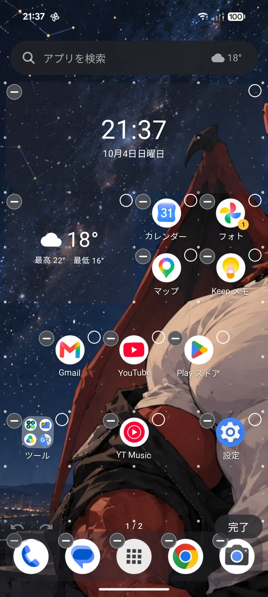
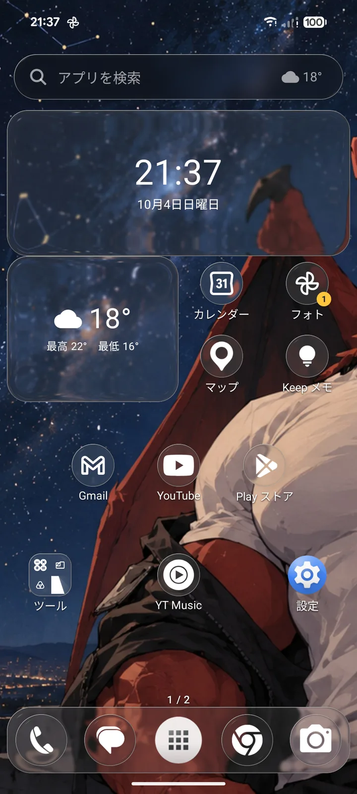
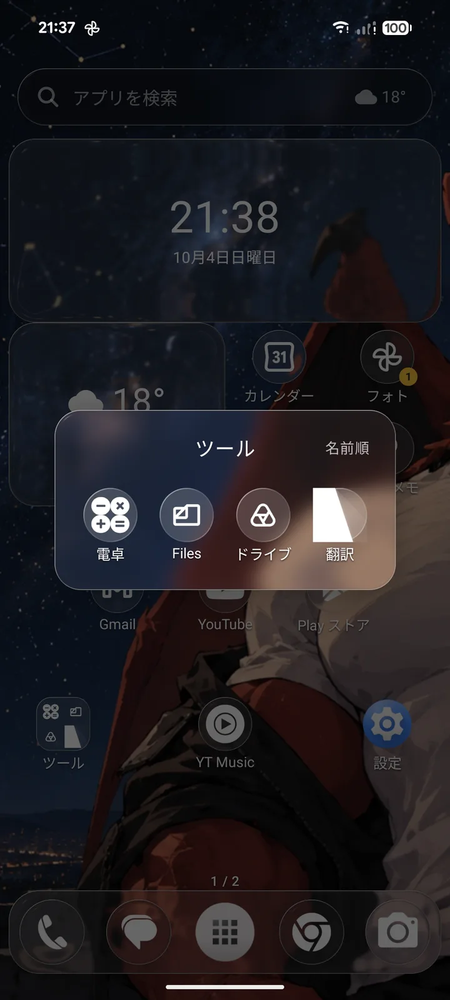
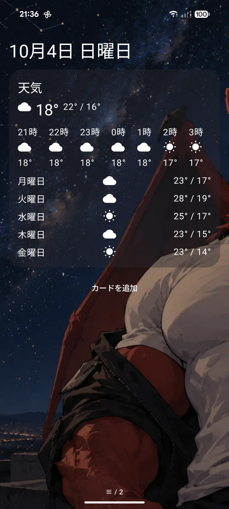
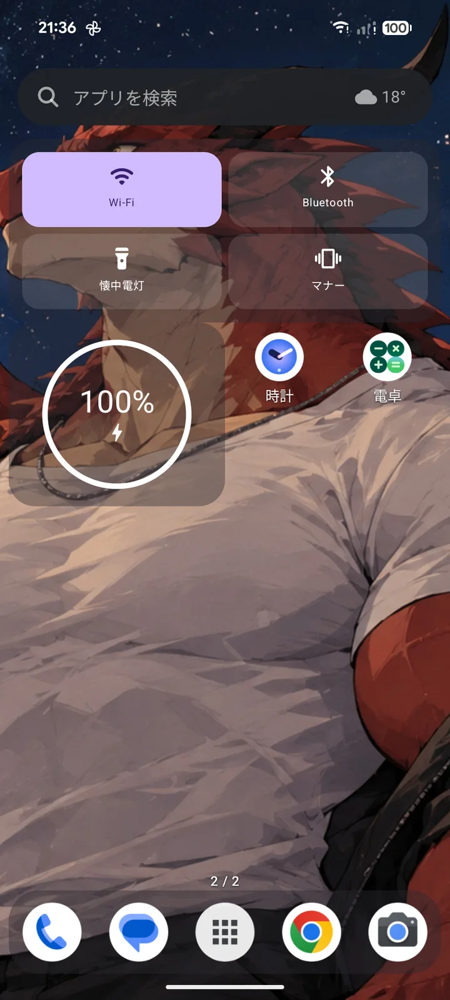

置き場所は自由自在
アイコンもウィジェットも、思った通りの場所に。

グリッドの目印
美しいガラス表現を、あなたのホームに
ドックも、フォルダも、あなたの世界を邪魔しません。


フォルダも
左にはあなたのスペースを。
今日の予定や天気、あなたに必要なことがここにあります。

Dracoのために設計されたウィジェットも
今を知るためのツールや、便利に使うためのツールがこれ一つで

ワンタッチで
ほかにも
- 見た目アイコンの形や大きさ、ラベルの書体、色と不透明度。色はカラーピッカーで選べます
- 検索下にスワイプで検索、上でアプリ一覧。ひらがなの読みでも探せます
- やり直し編集は元に戻す・やり直すができて、配置は自動で残ります
- まとめて動かす複数選んで、相対位置のまま一緒に動かせます
- 引っ越しNova Launcher のバックアップ（.novabackup）を読み込めます
- お知らせ新しい版が出ると、アプリの中で教えてくれます
インストール方法
- APK をダウンロード下のダウンロードボタンから
- インストールを許可「提供元不明のアプリ」を聞かれたら、そのブラウザに許可します。
- ホームアプリに選ぶホームボタンを押して、Draco Launcher を選びます。
APK をダウンロード
上書きでインストールすれば、配置も設定も引き継がれます
使う前に
- 個人が AI の強力な支援を受けて作成したアプリです。利用にあたり料金は発生しませんが、動作の保証はしておりません。使用に当たって発生した不具合や損害についての責任は負いかねます。動作を確かめている端末: Google Pixel 8（Android 16）、Galaxy S24（Android 16）。
- APK の再配布は不可としております。本ページへのリンクにてお願いいたします。
- 予告なく配布や更新を終えることがあります。
- 今後、配布先を Google Play に移したり、広告を入れたりすることがあります。
- 内容は予告なく変えることがあります。
プライバシー
- アカウントを作成する必要はありません。配置・設定・よく使うアプリの記録は端末の中だけに保存し、外部へ送信することはありません。広告や分析のための情報を収集することはありません。
- 天気を出すとき、おおまかな位置（小数 2 桁に丸めた緯度・経度）を Open-Meteo に送信しています。地域の名前は Android の機能によって確認しています。
- 更新の確認をするため、GitHubに最新バージョンを確認する機能があります（オフにできます）。
- フィードのニュースは、追加されたサイトのみ取得します。
- 予定・通知・位置などの許可は、その機能を使うときにのみ許可が必要となります。取得した情報を外部に送信することはありません。